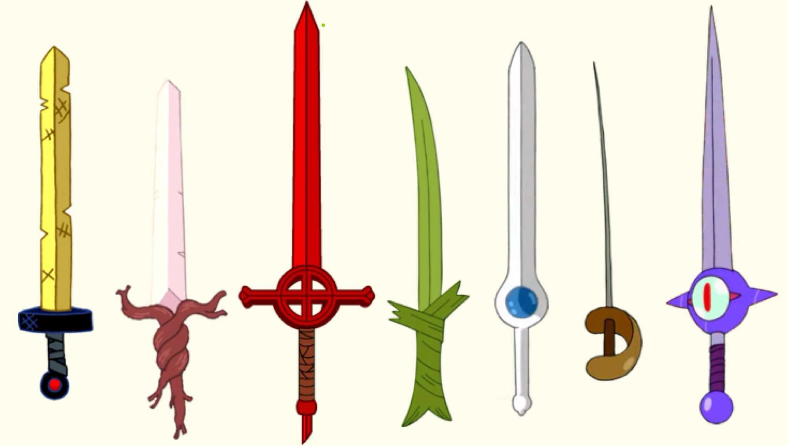
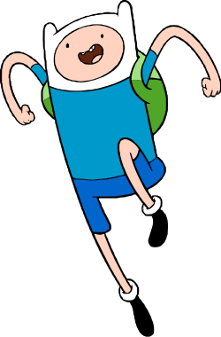

Finn The Human
Finn the Human is the brave and enthusiastic hero of the Land of Ooo. Raised by Jake the Dog’s family, Finn dedicates himself to helping others, protecting the innocent, and battling evil wherever it appears. Although young, he shows remarkable courage, creativity, and a strong moral compass. His determination and sense of adventure make him one of the most iconic heroes in Adventure Time.

Throughout the series, Finn wields several memorable swords, each with its own story and powers. From the golden sword of battle to the demon sword, grass sword, and later the Finn Sword forged from a version of himself, each weapon represents a new phase in his journey. His swords aren’t just tools in combat – they reflect Finn’s growth, challenges, and the evolving world around him.
